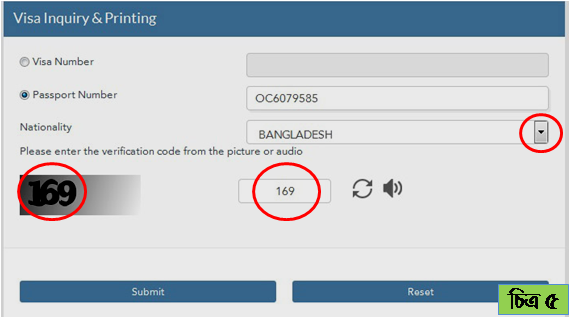

| রাষ্ট্রীয় নাম | : | স্টেট অফ কাতার |
| স্বাধীনতা | : | ১৮ ডিসেম্বর, ১৯৭১ |
| সরকার | : | রাজতন্ত্র |
| জনসংখ্যা | : | ১৮,৫৩,৫৬৩ |
| মুদ্রা | : | রিয়াল (১রিয়াল=২৩টাকা প্রায়) |
| আয়তন | : | ১১,৫৯০ বর্গ কিলোমিটার |
| ভাষা | : | আরবী |
| ধর্ম | : | ইসলাম (৯৬%) |
| প্রধান খাদ্য | : | ভাত, রুটি, ডাল, বিরানী, খেজুর |
| ফোন কোড | : | ৯৭৪ |
| প্রধান শিল্প | : | পেট্রোলিয়াম, সার, স্টিল |
| সর্বোচ্চ তাপমাত্রা | : | ৪২০ সেলসিয়াস |
| রাজধানী | : | দোহা |
| উল্লেখযোগ্য শহর | : | আর রায়ান, আল ওয়াকরাহ |
| বাংলাদেশ থেকে দূরত্ব | : | ৪,০০০ কিঃমিঃ |
| বাংলাদেশের সাথে সময়ের পার্থক্য | : | ৩ ঘন্টা (-) |
| বাংলাদেশী অভিবাসীর সংখ্যা | : | ১,৫৫,০০০ জন |
দোহা নগরী
কাতারের ভিসা
ব্রাউজারের এ্যাড্রেস লেখার ঘরে https://portal.moi.gov.qa/wps/portal/en লিখে এন্টার চেপে ওয়েবসাইটে প্রবেশ করুন। যে পেজটি ওপেন হবে তার Inqueries আইটেমে ক্লিক করুন (চিত্র ১)।
Inqueries ক্লিক করলে নিচের উইন্ডোটি আসবে যেখানে Visa Inquery ক্লিক করতে হবে (চিত্র-২)
Visa Inquery ক্লিক করলে যে উইন্ডোটি আসবে যেখানে Visa Inquery and Printing ক্লিক করতে হবে (চিত্র ৩)|
Visa Inquery and Printing ক্লিক করলে নিচের উইন্ডোটি আসবে (চিত্র ৪)।

Visa Number অথবা Passport Number লিখে Nationality লেখার বক্সের ডানে তিন কোনা ছোট কালো চিহ্নের উপর ক্লিক করে ড্রপ ডাউন মেনু থেকে Bangladesh সিলেক্ট করতে হবে। এরপর নীচে বামপাশে লেখা সংখ্যাটি মাঝের ফাঁকা ঘরে লিখে Submit বাটন ক্লিক করতে হবে। (চিত্র ৫)।
Submit লেখা বাটনের উপর ক্লিক করলে জানতে পারবেন ভিসা ঠিক আছে কিনা (চিত্র ৬)।